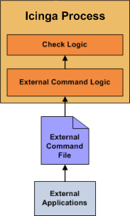
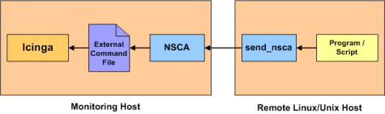

In most cases you'll use Icinga to monitor your hosts and services using regularly scheduled active checks. Active checks can be used to "poll" a device or service for status information every so often. Icinga also supports a way to monitor hosts and services passively instead of actively. They key features of passive checks are as follows:
Passive checks are initiated and performed external applications/processes
Passive check results are submitted to Icinga for processing
The major difference between active and passive checks is that active checks are initiated and performed by Icinga, while passive checks are performed by external applications.
Passive checks are useful for monitoring services that are:
Asynchronous in nature and cannot be monitored effectively by polling their status on a regularly scheduled basis
Located behind a firewall and cannot be checked actively from the monitoring host
Examples of asynchronous services that lend themselves to being monitored passively include SNMP traps and security alerts. You never know how many (if any) traps or alerts you'll receive in a given time frame, so it's not feasible to just monitor their status every few minutes.
Passive checks are also used when configuring distributed or redundant monitoring installations.

Here's how passive checks work in more detail...
An external application checks the status of a host or service.
The external application writes the results of the check to the external command file.
The next time Icinga reads the external command file it will place the results of all passive checks into a queue for later processing. The same queue that is used for storing results from active checks is also used to store the results from passive checks.
Icinga will periodically execute a check result reaper event and scan the check result queue. Each service check result that is found in the queue is processed in the same manner - regardless of whether the check was active or passive. Icinga may send out notifications, log alerts, etc. depending on the check result information.
The processing of active and passive check results is essentially identical. This allows for seamless integration of status information from external applications with Icinga.
In order to enable passive checks in Icinga, you'll need to do the following:
Set accept_passive_service_checks directive is set to 1.
Set the passive_checks_enabled directive in your host and service definitions is set to 1.
If you want to disable processing of passive checks on a global basis, set the accept_passive_service_checks directive to 0.
If you would like to disable passive checks for just a few hosts or services, use the passive_checks_enabled directive in the host and/or service definitions to do so.
External applications can submit passive service check results to Icinga by writing a PROCESS_SERVICE_CHECK_RESULT external command to the external command file.
The format of the command is as follows:
[<timestamp>] PROCESS_SERVICE_CHECK_RESULT;<host_name>;<svc_description>;<return_code>;<plugin_output>
where...
timestamp is the time in time_t format (seconds since the UNIX epoch) that the service check was perfomed (or submitted). Please note the single space after the right bracket.
host_name is the short name of the host associated with the service in the service definition
svc_description is the description of the service as specified in the service definition
return_code is the return code of the check (0=OK, 1=WARNING, 2=CRITICAL, 3=UNKNOWN)
plugin_output is the text output of the service check (i.e. the plugin output)
![[Note]](../images/note.png) |
Note |
|---|---|
|
A service must be defined in Icinga before you can submit passive check results for it! Icinga will ignore all check results for services that had not been configured before it was last (re)started. |
![[Tip]](../images/tip.png) |
Tip |
|---|---|
|
An example shell script of how to submit passive service check results to Icinga can be found in the documentation on volatile services. |
External applications can submit passive host check results to Icinga by writing a PROCESS_HOST_CHECK_RESULT external command to the external command file.
The format of the command is as follows:
[<timestamp>] PROCESS_HOST_CHECK_RESULT;<host_name>;<host_status>;<plugin_output>
where...
timestamp is the time in time_t format (seconds since the UNIX epoch) that the host check was perfomed (or submitted). Please note the single space after the right bracket.
host_name is the short name of the host (as defined in the host definition)
host_status is the status of the host (0=UP, 1=DOWN, 2=UNREACHABLE)
plugin_output is the text output of the host check
|
Note |
|---|---|
|
A host must be defined in Icinga before you can submit passive check results for it! Icinga will ignore all check results for hosts that had not been configured before it was last (re)started. |
Unlike with active host checks, Icinga does not (by default) attempt to determine whether or host is DOWN or UNREACHABLE with passive checks. Rather, Icinga takes the passive check result to be the actual state the host is in and doesn't try to determine the host's actual state using the reachability logic. This can cause problems if you are submitting passive checks from a remote host or you have a distributed monitoring setup where the parent/child host relationships are different.
You can tell Icinga to translate DOWN/UNREACHABLE passive check result states to their "proper" state by using the translate_passive_host_checks variable. More information on how this works can be found here.
|
Note |
|---|---|
|
Passive host checks are normally treated as HARD states, unless the passive_host_checks_are_soft option is enabled. |

If an application that resides on the same host as Icinga is sending passive host or service check results, it can simply write the results directly to the external command file as outlined above. However, applications on remote hosts can't do this so easily.
In order to allow remote hosts to send passive check results to the monitoring host, the NSCA addon was developed. The NSCA addon consists of a daemon that runs on the Icinga hosts and a client that is executed from remote hosts. The daemon will listen for connections from remote clients, perform some basic validation on the results being submitted, and then write the check results directly into the external command file (as described above). More information on the NSCA addon can be found here.
© 1999-2009 Ethan Galstad, 2009-2017 Icinga Development Team, https://www.icinga.com